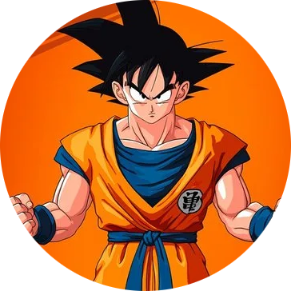

Goku, nascido Kakarotto é o protagonista das franquias Dragon Ball. Ele é neto adotivo de Vovô Gohan, filho de Bardock e Gine, o irmão mais novo de Raditz, o marido de Chichi, pai de Gohan e Goten, avô de Pan e mais tarde tataravô de Goku Jr. Sua primeira aparição ocorreu em 1984, no primeiro capítulo do mangá Dragon Ball, publicado na revista Weekly Shōnen Jump. Goku é inspirado em Sun Wukong, personagem do romance Jornada ao Oeste. Porém, Toriyama mudou algumas de suas características para ser mais original. Goku é apresentado como um menino estranho com rabo de macaco e força sobre-humana.
